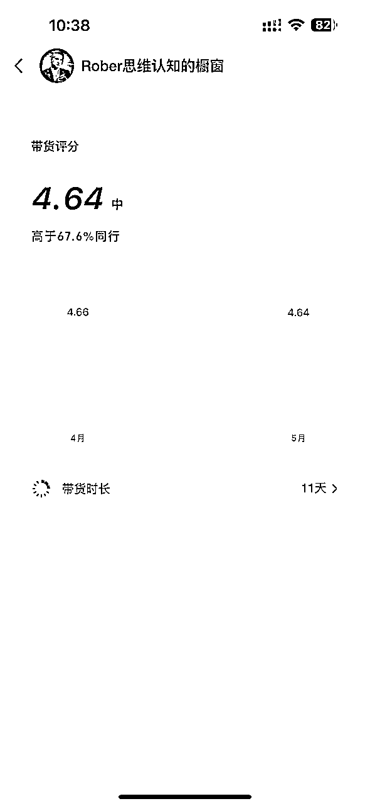
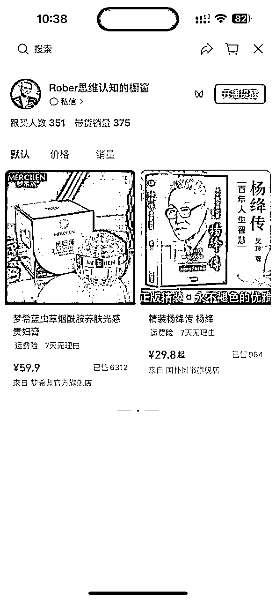
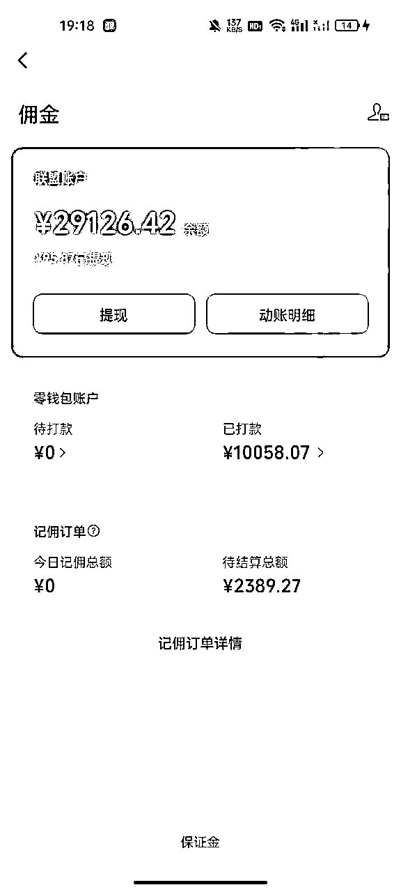
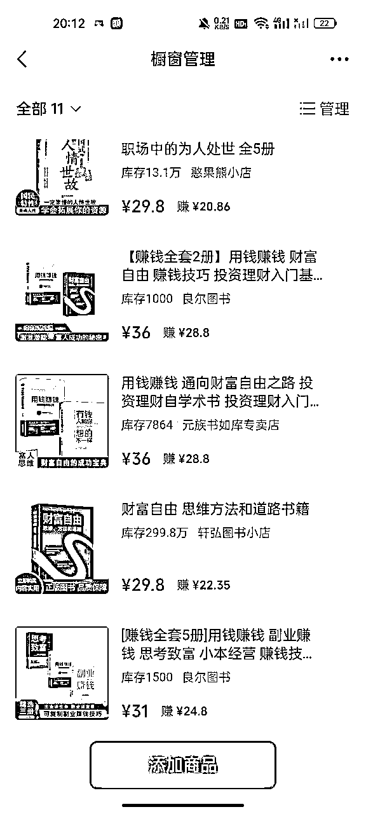
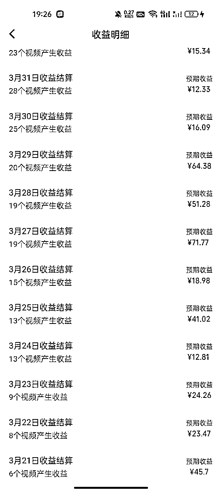
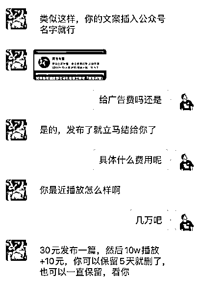

来源：https://jqs9nvj1sk5.feishu.cn/docx/O3gEdhKUvouX1HxrjH1cF91Ansd
没接触过AI的小白，利用AI数字人带货半月变现5位数，一个月变现6位数。
拆解我为什么做AI数字人，和怎么做AI数字人。包括项目背景，玩法介绍、变现途径和项目分析。
大家好我是biubiu，福建福州的，一名毕业还没满2年的，99年的，普通二本院校毕业的，普通人。
这也是我的第一篇长文，也是我自己的理解，接下来这部分是我的个人成长部分，如何一步一步执行，提高自己的认知。对此不感兴趣的小伙伴可以跳过这部分，直达下列第二部分正文的项目背景。
2021我在福州的一所普通大学毕业后，选择以3000的底薪去一家福州比较头部的电商公司实习，学习电商的实践知识。最开始干的是场控的活，就是所谓的电商捧哏。我为什么会选择这份工作呢，因为在你还什么都不会的时候，想要靠自己摸索出一套赚钱的方法太难了。对此有2种方式来达成我的目标，一个是付费学习大佬的赚钱思维，花钱让人家教你。另一种就是找个相关领域的公司，前期学习的时候公司越大越好，公司越大，体系越完善。努力的将自己塞进这家公司里面，让他们愿意花钱来教你。前提是你能提供自己的价值。而我提供的就是我相对灵活的头脑和劳动力，我当时用我大学创业的案例和经验成功面试进了这家公司，电商行业也是比较看能力不看学历的一个行业。
我用我的行动也证明了我的价值。加入公司半年以后，我就从没什么经验的直播间场控，转岗投手，再转岗运营，再到小团队负责人。带领4人小团队成功做到单月GMV破2百万，数据真实有效。导致后来我离职创业的时候，公司投诉到学校里面去，届时公司和学校还有所合作，公司认为是他们培养完我以后，是学校的老师把我撬走了。
其实当时我没想着那么快离职创业的，我也知道自己的成功和公司的方法论脱不开关系，我是在复制的环节做的比较好，理解的比较透彻。既然有这个认知为什么还要离职呢？
因为当时培养我的那个老运营，他来找我了，当时手上的那个项目机会太大了，届时的不确定因素，我还付费找了挺多大佬来说明此类情况，最后结合交流的经验和我自己对我自己的规划，还有项目的潜力这3者，我还是决定辞职创业，大不了从头再来。
后续在项目前2个月亏损的情况下，我们团队在临近春节的那个月，终于爆单了，我们当时做的是雪莲果，当天最高销量破30w。最终我们也是在年前为团队带来了近百万的收入。届时我们的团队有11个人。而这个品，是我选的。
上诉说的是2022年，在2023年呢， 我也尝试了各式各样的项目，有成有败，更多的是心态上的起伏，我把他定义为人生总有这个阶段，前进的速度过于缓慢，虽然也取得了一些成绩，但是并不满足我对自己的要求。
话题扯的有些远。下面开始此次的正文部分：短视频平台爆火的AI数字人带货拆解
2024年3月份，结束了春节的休养生息。开始思考，开始今年的规划。顺带复盘一下23年的历程，23年做的项目有：视频图文纯付费带货，视频号香道自然流直播，视频号自然流真人口播带货，视频号真人IP带货。其中视频号自然流真人口播单月变现6位数。
但是平台的规则更新让这类视频的稳定性变得极差，再加上我自己的长期计划是有沉淀，要深耕一件事。所以在3月份，历经了一个月的信息交流与思考，我搜索信息的优先级是，电商带货，视频号，看了一周的生财相关帖子和一些相关领域的大佬，做出了自己的决定，我决定开始了解AI，并且对自己进行了初步的定位：AI+电商+短视频+视频号，从AI数字人带货开始。
起初是刷到了视频号和抖音的一批数字人账号。对于做电商出身的我来说这个信息我十分的敏感。再加上我自己做过真人口播类视频和，真人IP带货账号，并且最重要的是我看到了对标账号的潜力，流量十分有潜力，带货变现的潜力也很大。所以我对自己有了开始的AI+电商+短视频+视频号的定位。
当时我关注到了一批“思维认知”和“女性情感”赛道的账号，这些账号是通过数字人的技术手段，利用外国教授的脸，融合爆款文案，制作出爆款视频。说简单了就是打造外国人的IP形象。这类视频中的人物他们的表现力都比较强大，因为他们本身就经历的其他优质平台的筛选。在打造IP的过程中获取用户的好感与信任进行带货。
当时我获取到的一些数据也能证明这类账号的变现能力：视频基本上一周内就能起号（开通挂车权限）
并且在打开了他们的带货天数的时候感觉这件事情马上我就要去做！带货10天成交上千单！下面是我刚刚马上找的一个案例：


就这样，我带着一堆对标账号，和变现模式分析的信息，研究了一周的时间，最终开始矩阵执行，并且在踩了一周的坑之后，在第二周直接打爆了账号，视频连续爆了3条100w+的流量，并且在第三周就变现了1w+。

对于有电商带货经验的人，这个流程并不难，这其中的核心更多的是在于判断，对流量，对内容的判断。这里我就给大家介绍一下链路。
确定要做的内容赛道，找好对标账号之后。其中比较关键的是在人物的选择上，人物的选择，其实应该说数字人模板的选择是至关重要的。因为大家看这类带IP属性的视频，最重要的就是人物的表现力。人物的表现力主要的核心就是人物的形象，声音，演讲能力，镜头感这些。同样的一段文案，在领导和同事的嘴上说出来的效果是不一样的，这个道理大家都懂。所以人物模板找对了，这个爆款视频就成功了一半。这是我踩的第一个坑。
我在最开始的一周，测试了至少5个人物，并且用的都是相同的一批文案，这个数据足以支撑我的上述观点。
需要获取这个人物的音频训练素材和视频素材，用于克隆声音和形象。声音和形象的克隆是分开的，目前国外的elevenlebs这个网站优缺点都完美的契合我们这个类型的视频。外国的腔调的口气说中文，这个点对于我们克隆国内人物声音的缺点，在做外国人形象的数字人的时候，反而成为了一大优势！
克隆声音用elevenlebs，克隆形象可以用飞影，小冰，有言等等，
有了声音和视频的模板参数后，就可以利用AI的技术开始融合人物，声音，文案了。融合完成后进行一下后期的修饰就可以大功告成，一条视频就制作好了。
一个人甚至十分钟就能出一条视频。所以十分适合矩阵的打法，全平台发布都是没有问题的，这类视频不像海外美女那样，只能在快手玩。抖音，视频号，快手，小红书，甚至其他的有流量分成的平台，都可以发布。
做IP类型的账号，我直接给结论，只要你有流量，卖什么都可以。不过是转化率高低的区别。变现的途径多种多样，不仅限与短视频带货，引流，咨询，课程，交流等等，都可以，下面我给大家列几个来说明一下：
首先我们做的是平台的账号，那么直接在平台上进行带货是十分方便的，这里分为短视频带货和直播带货，其中又分为付费带货和自然流带货，直播的话就是短视频爆了直接开播，评论区做好引流直播间。
短视频带货就是直接在短视频上挂上链接直接带货。这部分的变现能力和变现成本是最低的，因为制作一条视频只需要十分钟的时间，后续的变现流量也不需要直播间去承接，可以实现“躺着赚钱”和“睡觉赚钱”。我经常就是一觉睡醒先看一眼今天的收益哈哈。
为什么这类短视频带货行得通呢？因为我们选的“女性情感”和“思维认知”这2个赛道的内容都比较容易出流量，有流量就对带货的商品有曝光，有曝光就会有成交，只要这个品没有问题。
带的货主要以书籍和养生品为主，情感的文案用户比较容易触动，在文案的后续加一些钩子，在这个充满焦虑的社会，这些书籍就像是一记稳定军心的良药，转化率还是十分可观的。
带货的话直接从联盟中选，或者自己开设店铺都是可以的，经过我们和商家的磨合，目前综合的佣金平均在70%左右。自己开设店铺的话利润可以更高。货品可以直接从1688上面进，不过现在图书类目的链接比较麻烦的是，需要图书的授权，所以直接从联盟选的话更方便，节省人工和时间成本。
不过如果是自己的店铺的话，潜力是更大的。因为不仅仅自己可以带，达人也可以带，就是顺带着把自己的店铺给经营起来了。
这里把橱窗开通之后，橱窗的收益在短视频带货中的占比也是蛮大的，所以不是一定要挂车才会出单，橱窗的出单量也是不错的，所以橱窗中品的排列也很关键。尽量把爆款品放到前列。

创作者分成有玩过视频号的人应该都不陌生，这点的收益是比较稳定的，因为这类视频的流量都比较高，基本都是上万的播放，也容易出10w+的点赞数据，所以在视频号这边的AI类视频，开通创作者分成是必不可少的。
一个新号很快就能开通创作者分成计划的权限，相比于抖音快手，视频号目前这部分收益还是比较容易的，有流量就有收益。

这部分广告指的是和广告商协商在视频文案中插入广告，从而获取收益的过程。已经有和广告商对接过。目前我的最大账号粉丝量在20w+，这样的一条广告收益基础收益在15-100元不等
这类广告和推广咸鱼，得物这类APP的大广告不同，因为我们的广告商大部分是公众号，他们是为了引流至公众号中，推广文案就是一句如果想了解xxx，可以关注xxx公众号。附上相关图片就可以了，制作简单，交付也简单，也不影响每天的视频制作流程。后续有爆款视频也有额外的收益。

目前视频号AI数字人的市场十分有学习的需求，而且引流手段简单粗暴，直接在主页留下微信就可以了，我的视频在爆了之后，微信一天被动加人200人。不需要在视频号中额外回复微信，大部分人都是直接加微信的，而且因为主页留下的信息足够准确，所以加过来的人都是学习需求十分强烈的人群，引流的人非常精准。
付费学习目前市场上的价格参差不齐，我了解了一下从199-999都有，营销的亮点也很多：变现快，潜力大，学AI数字人，各类技术，资源。做好朋友圈营销，哪怕高客单也会有至少10%的转化率。
做知识付费一定是建立在自己的流程跑通的基础上，也就只有这个简单的要求了，因为账号基本都是从爆款视频引流的，你甚至可以和学员一起进步，因为数字人目前本身就还处于发展的阶段。
我手上的一些学员，在跑通了变现的下一步动作就是马上矩阵变现，接着就是引流知识变现，带货收益和卖课收益甚至能做到55开。做到带货教学两不误。伴随着数字人流量市场越来越火爆，学习课程的需求会越来越高。
至于课程的部分，就是把自己的流程制作出来，课程越完善，售后就越少。交付就越轻松，就拿我自己举例子，我直接把流程用视频的形式制作出来，就像技能性的网络博主一样一步一步跟着操作，在交付答疑的过程中，最大程度的减少技能性的交流。
我是参考一些宝妈社群的交付，在去年的时候也了解了视频号连怼的玩法，其中短视频搬运过审的技术就讲的很清楚很明白，一些宝妈他们对这种能赚些外快的项目热情是很高涨的。我就是以小白的视角来制作的课程，这样最大程度的减少了技能性的疑问。这套流程下来，以我的交付经验。如果是制作视频过程中出现了一些问题，基本也是学员自己的电脑或者手机的问题。
数字人账号的涨粉速度是很快的，得益于比较容易出爆款视频，所以有一些对千粉账号有需求的团队，也可以将账号出售给他们，越多粉丝的账号收益也会越好。
对于变现潜力这么高的账号，售卖账号我认为是下下策，而且现在视频号的平台信息如此不透明，账号的价值并没有那么高。抖音的账号现在自然流玩的也比较少，购买账号的人也没有那么多，所以这个售卖账号我并不是十分的看好，但是也是一种变现途径。
整个执行的流程可以分为：数字人制作---视频制作---账号带货
1、数字人制作：
由于是用真人拍摄的视频作为制作数字人参考的模板，所以数字人和真人并没有什么区别，通过评论区的回复大概只有30%的人能分辨的出来是数字人。这其中如果用的是外国人的话数据是要好于中国人的形象的。毕竟外国人讲中国话本身就比较新鲜，停留的基础数据就很好。
2、视频制作
视频制作只要会用电脑的，甚至会用手机的就可以，剪映操作的步骤并不麻烦，就分为背景、字体、音乐、去重这几个部分。这部分拼的纯纯就是执行力，视频制作数量越多，能做的账号就越多，爆的视频数量或者说机会也就更多。
3、账号带货
账号属于哪个赛道就带相关的货就行，例如情感可以带的货有养生食品女神粥，美妆产品黄芪霜，还有各种缓解情感焦虑和解决情感问题的书籍，这些产品的佣金都可以做到70%，销量也是经常高居不下的，产品本身就自带一部分流量，也更容易成交。
其实在4月份开始的时候这篇解析就应该出来了，但是为什么拖到了现在呢，因为在4月中旬的时候经历了流量断崖式下跌，当时为了测试出问题所在，忙我焦头烂额。几乎把上述的点全部测试了一遍，还是没有结果，我心态都快要炸裂。不过我深知在这个时候急是没有用的，所以我马上静下心来，开始刷同行的视频，和多个同行交流，最终发现是平台的数字人流量波动问题，大部分账号在那2周内流量都十分的波动，不稳定。
于是我终于不再心慌，在大家流量都不好的时候，我专心研究那些还可以获取流量的视频结构，然后结合以前我自己爆过的视频来进行优化。果然在4月下旬的时候流量状态迎来了回暖，陆陆续续视频和账号的流量又如同雨后春笋般又跑起来了。
这一点我想很多人会很感兴趣，因为我在视频号跑通以后也尝试了多平台的发布，所以我从几个角度来说明这件事：
平台审核按照严格到宽松分别是：
视频号>小红书>抖音>快手
所以大家在做做不同赛道的时候可以参考这个数据去选择平台，从这里可以发现，视频号可以做的，全平台都可以做，因为视频号在流量端的规则，在四大短视频平台中，目前是最严格的那个。
视频号以40岁以上的人群为主，大部分都是中老年人，所以从人群需求的角度出发，结合自己的实际情况，去选择赛道和选择平台。
其中抖音的年龄层次是最全面的，小红书的人群比较年轻化，所以比较适合做知识付费的引流平台。快手的优势在于审核机制比较松，一些养生类的产品比较容易做起来。
所以不同赛道在不同平台获取的流量是不同的，我大概的综合描述一下就是，破10000播放是没有问题的，至于爆不爆就要看对内容的研究和对流量的判断了。
以上就是我近期做AI数字人带货的心得和解析，希望对大家有帮助。踩过的一些坑希望可以帮助到大家。
大家对制作部分好奇我晚些补上